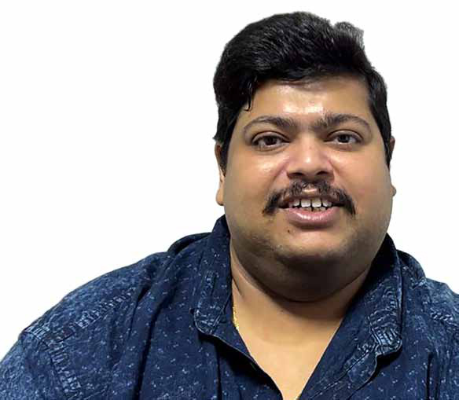
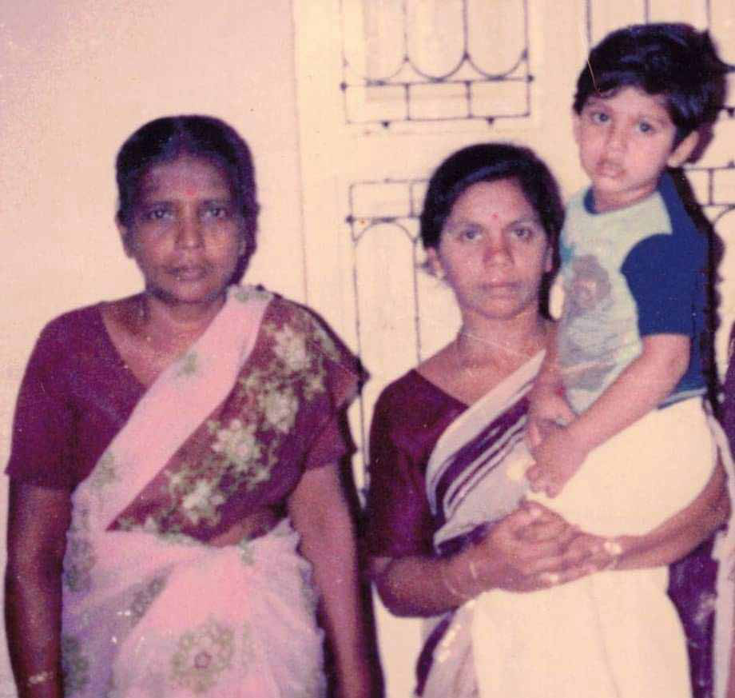
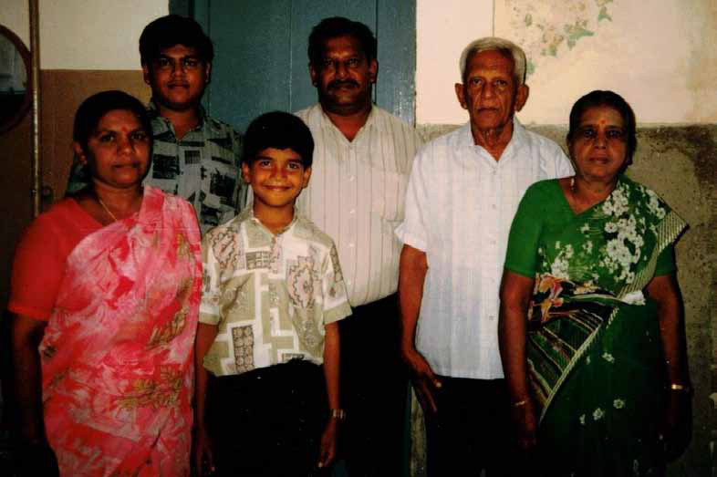
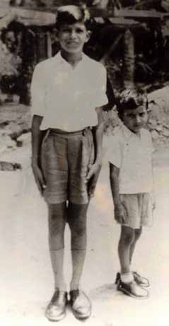
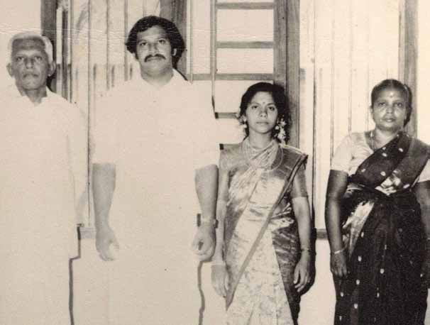

Setting the Record Straight: Karthik Manoharan on Commemorating Uncle Prabhakaran
Setting the Record Straight: Karthik Manoharan on Commemorating Uncle Prabhakaran
Jaffna Monitor hellojaffnamonitor@gmail.com 8 A mid various unfounded claims circulated by certain Indian politicians and overseas representatives of the Liberation Tigers of Tamil Eelam (LTTE), suggesting the possible resurgence of Velupillai Prabhakaran, Manoharan, the elder brother of Prabhakaran, along with his son Karthik Manoharan, have announced their intention to conduct a public memorial. This decision has been taken to quell the speculative narratives that Prabhakaran and his family are still alive. The Manoharan family is also preparing to hold a public 'thithi', a ceremony on the day in the lunar calendar marking the death anniversary of Velupillai Prabhakaran, his wife Mathivathani, their eldest son Charles Anthony, daughter Thuvaraga, and youngest son Balachandran, thereby aiming to bring srilanka Setting the Record Straight: Karthik Manoharan on Commemorating Uncle Prabhakaran BY: Our Reporter

Jaffna Monitor hellojaffnamonitor@gmail.com 9 closure to these persistent rumours. The Velupillai family's recent initiative serves to conclusively address and dispel the baseless rumours that have been circulating, suggesting that Prabhakaran's family survived the final stages of the conflict. This step is particularly focused on putting an end to the misleading claims about Thuvaraga's survival and the consequent solicitation of significant funds from the Sri Lankan Tamil diaspora in Europe, Canada, and other nations. The family's action is a direct response to these ongoing deceptions and aims to bring a sense of closure to these unfounded narratives. In a recent interview with Jaffna Monitor, Karthik Manoharan, nephew of Prabhakaran and the son of Prabhakaran's elder brother Manoharan, provided insights into the upcoming Memorial Day dedicated to Prabhakaran's family. What are the motivations behind organizing the memorial day..? Karthik Manoharan alongside his mother Vanajathevi Manoharan and grandmother Parvathipillai Velupillai, the mother of the LTTE leader Prabhakaran in Trichy, 1984.

Jaffna Monitor hellojaffnamonitor@gmail.com 10 The decision to commemorate my uncle Prabhakaran's family arises from a series of unfortunate events. On February 13, 2023, misinformation propagated by the group led by Tamil Nadu politician Pazha Nedumaran, which falsely claimed that my sister Thuvaraga is alive, alongside videos released by my Aunt Mathivathani's sister, Ms Aruna, supporting Pazaha Nedumaran's claim, resulted in a gross dishonour to the legacy of my uncle and his family. These actions have not only disrespected their memory but have also been linked to financial malpractices carried out under the guise of my uncle Prabhakaran's name. We are forced to take decisive steps to halt such unscrupulous activities and safeguard against their recurrence. This memorial event is a necessary measure to curtail the ongoing fraudulent exploitation and misuse of my uncle's name for financial profit. Through this event, we aim to appropriately commemorate the brave lives and the valorous sacrifices of my uncle Prabhakaran and his family on the battlefield. Prabhakaran's Parents Together with Manoharan's Family Late 1950s, Sri Lanka: A Very Young Prabhakaran (Right) with His Elder Brother Manoharan


Jaffna Monitor hellojaffnamonitor@gmail.com 11 Some politicians and profiteers perpetuate the narrative that Prabhakaran is still alive and will return. Do you believe your announcement will significantly counter their business plans in Prabhakaran's name? There are many ways to live. Rather than resorting to deceit and falsehoods by falsely claiming that my uncle Prabhakaran and his family members will return, those who exploit this narrative for financial gain should consider more honest means of livelihood. They could opt to seek assistance if in poverty or strive to earn their living honourably through hard work. Otherwise, they might as well resort to begging on the streets. There's nothing we can do about it. On what basis did you conclude that your uncle Prabhakaran and his family are no longer alive? The enduring hope that Uncle Prabhakaran's family might one day return has been a sentiment deeply rooted in our hearts for many years. Yet, as time progressed, this belief began to wane in light of various developments. The year 2023 marked a turning point, extinguishing even the faintest glimmers of this hope. Those who claim that my uncle Prabhakaran, Aunt Mathivathani, and sister Thuvaraga are still alive have consistently failed to provide any concrete evidence or public appearance to substantiate their assertions. Instead, these individuals allege that my uncle's family has chosen to live away from the public eye. However, one must question the rationale behind this prolonged absence; if their claims were true, why would they not continue the same silence they have maintained over the past 14 years? It is now with a heavy heart that I have come to accept the likely reality: my uncle Prabhakaran and his family achieved martyrdom on the battlefield during the final war in 2009. Valvettithurai, 06.07.1979: Vellupillai and Parvathipillai Velupillai with their elder son, Manoharan, and his bride, Vanajathevi, on their wedding day.
